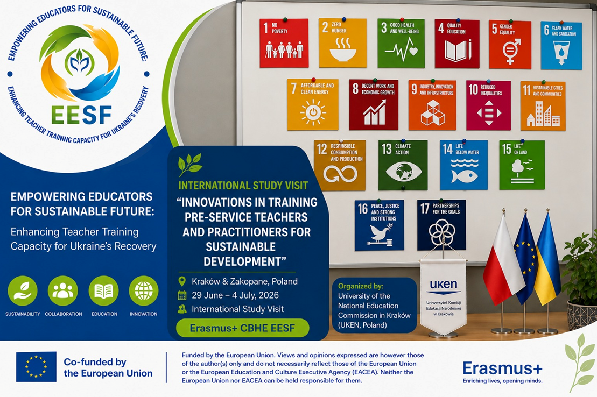

🌿 The International Study Visit of the Erasmus+ CBHE EESF Project Partners Concluded in Poland
From 29 June to 4 July 2026, an international study visit of the partners of the Erasmus+ KA2. CBHE №101237551 EESF project “Empowering Educators for Sustainable Future: Enhancing Teacher Training Capacity for Ukraine’s Recovery” took place in Kraków and Zakopane, Poland. The event was organised by the University of the National Education Commission in Kraków (UKEN, Poland). The study visit brought together representatives of partner universities and organisations from Ukraine, Poland, the Czech Republic, and Spain to work jointly on the development of Education for Sustainable Development (ESD) and the modernisation of teacher education in Ukraine.
The programme of the visit began with the international scientific seminar “Innovations in Training Pre-Service Teachers and Practitioners for Sustainable Development”, dedicated to contemporary approaches to training future teachers and developing competencies for a sustainable future. Participants discussed the experience of implementing Education for Sustainable Development in European countries, the role of values and culture in education, as well as the importance of deep competencies for the post-war recovery of Ukraine.
An important component of the visit consisted of practical training sessions and workshops devoted to active learning methods, the development of sustainability competencies, the interdisciplinary integration of the Sustainable Development Goals (SDGs), the use of innovative educational approaches, and the establishment of international educational partnerships. Participants worked on issues related to the sustainable recovery of Ukraine, the design of educational solutions for contemporary challenges, and the development of cooperation among higher education institutions – detailed programme of the study visit is available here .
A separate block of activities was dedicated to field learning and experience exchange in Zakopane. Over several days, participants presented their own experience in implementing ESD, worked in international teams, and took part in thematic workshops on the development of creative thinking, interdisciplinary learning, the use of artificial intelligence in education, and the integration of the cultural dimension of sustainable development into the educational process.
Special attention was paid to collaborative work on international project ideas. In mixed teams, representatives of partner universities developed concepts for future educational and community initiatives aimed at achieving the Sustainable Development Goals. The results of this work were presented during the final group presentations and discussed in the context of the further development of the EESF consortium.
The study visit became an important platform for professional dialogue, exchange of experience, and the development of new approaches to preparing educators for sustainable development. The event contributed to strengthening cooperation among project partners, developing international professional networks, and shaping a shared vision for the future of teacher education in Ukraine and Europe.
🌍 Together, we are building a resilient teacher education system for a sustainable future and the recovery of Ukraine.
Funded by the European Union. Views and opinions expressed are however those of the author(s) only and do not necessarily reflect those of the European Union or the European Education and Culture Executive Agency (EACEA). Neither the European Union nor EACEA can be held responsible for them.
#EESF #ErasmusPlus #EducationForSustainableDevelopment #SustainableDevelopment
#TeacherEducation #UkraineRecovery #InternationalCooperation #ESD
